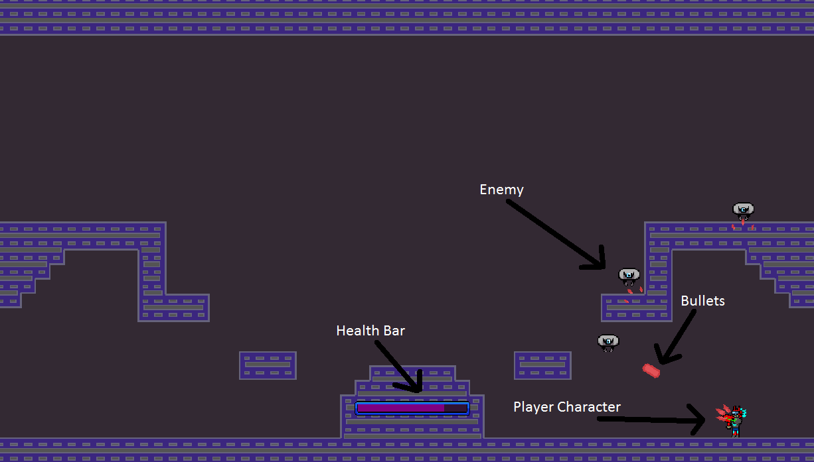

Genius Hour
How has the Development of Video Games helped us Create Games Today?
Welcome to my genius hour page. The Genius hour project is where we research a topic we want to know more about, then we create something related to that topic. The topic I chose was game creation from past to present, so as you might guess I made a game for my final product.

Why I Chose to do Game Creation
I chose this subject because I play a lot of video games, and I have always been fascinated in the creation of video games. Whether it be a run and jump game like Mario, or a war game like Call of Duty, I have always been intrigued by the engineering behind video game development.

Final Product
As I explained earlier, my final product was a game. But my product was different from most people, mine was a collaboration. My job was to code the game, and create all the sound and music for it. Whilst my partners job was to make all the artwork for the game. Now I bet my partner had a very hard time because he made a bunch of art at the beginning of the project, and I couldn't use half of it by the end. But I won't go in much detail on his struggle, let’s go to mine. What I figured out through this project was the challenge of time management. Creating a game, I found wasn't too hard to understand the code, but the time it took to get through it all was terrible, at one point I worked a whole 9 hours and still only changed the game slightly. To fix this I looked up tutorials for game making, and used them to help me quickly speed through the game making. The next step for me was to make the sound effects for the game, this was easy though. I just looked up a sound effect maker that I didn't have to pay a fee to use or other things like that.
Game Description
My game is in my mind, a mix between the original Mario game and just a point in click shooter. The character has about 5 health, meaning if he gets hit 5 times from a bullet he'll die. He shoots a little drone looking things, and they shoot back. You just run around the stage and try to kill them without dying yourself. You can also run through the left wall and get to the right side, same with running through the right side. The story of the game is simple, you play as a guy in armor who was hired to destroy a bunch of rogue drones. Not really a story, and not really hinted at in the game at all, just there to be there.
| Gravity | Pause Button | Working Gun | Start Menu | Working Enemy's | |
|---|---|---|---|---|---|
| My Video Game | Yes | Yes | Yes | No | Yes |

Research Highlights
Through this project I have learned many things like, one of the first arcade games was pong, and the first Mario game came out in 1985 with the most sales of 40 million till 2008. I've also learned that when video games were first created they were a lot harder to make then they are now, those old games are simple so I thought it would be easy for them to make. After more research I figured out that developers didn't have anything to tell them if they were doing wrong, or a game engines that gave them help.
Bibliography
- Amini, Tina. “Why Its So Hard To Make A Video Game.” Waypoint, 19 Oct. 2016,
waypoint.vice.com/en_us/article/4w33ed/why-its-so-hard-to-make-a-video-game.
- Chikhani, Riad. “The History Of Gaming: An Evolving Community.” TechCrunch,
TechCrunch, 31 Oct. 2015, techcrunch.com/2015/10/31/the-history-of-gaming-an-evolving-community/.
- “Getting Started With GameMaker Studio 2.” YoYo Games,
help.yoyogames.com/hc/en-us/articles/216757408-Getting-Started-With-GameMaker-Studio-2.
- “NesDev.com.” NesDev.com. Info, programs, and more. nesdev.com/.
- “Video Game Timeline.” a Video Game Timeline, www.onlineeducation.net.
Here is a link to the game editor I used to create my game!
https://www.yoyogames.com/gamemaker/features